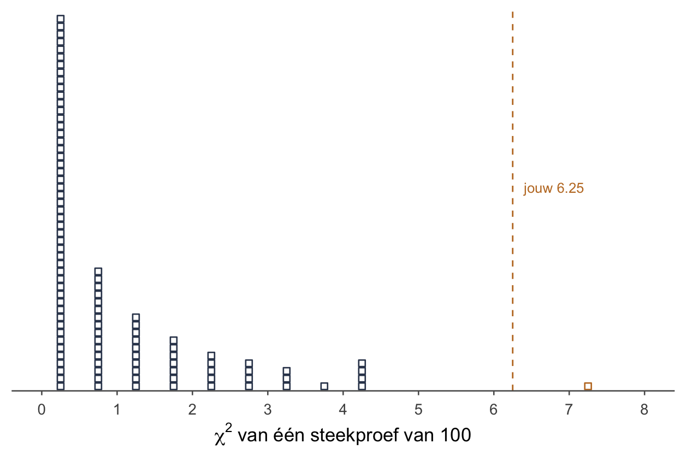
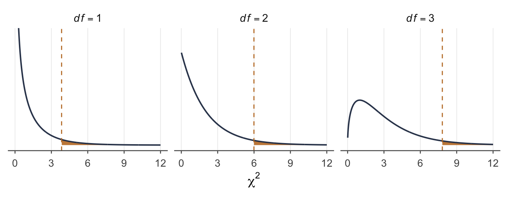
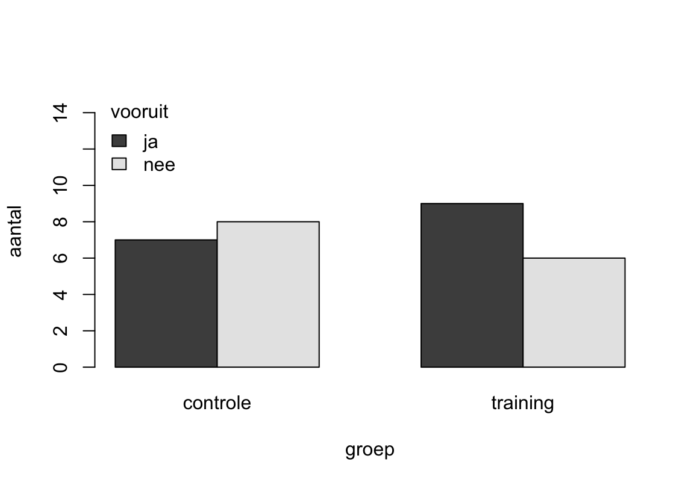

Week 4 · Kansen en toetsen voor categorische variabelen
tellen in plaats van meten
“Wie zijn telefoon naast zijn bed heeft, slaapt slecht,” zei de nachtvlinder, die elke nacht op al die schermpjes afvloog.
“Jung zou het synchroniciteit noemen,” zei de vleermuis, “een samenloop die iets betekent.”
“Of gewoon toeval,” zei de zevenslaper, “en hoe slapen de dieren die hun telefoon in de gang leggen?”
Dat wist de nachtvlinder niet: in de donkere kamers had hij nog nooit gekeken.
Wat je deze week leert
tellen in plaats van meten: categorische variabelen in een kruistabel
drie kansen uit één tabel: marginaal, gezamenlijk en conditioneel
wanneer twee variabelen onafhankelijk zijn, en de vermenigvuldigingsregel
de verwachte aantallen als er niets aan de hand is
de χ²-toets voor onafhankelijkheid, met de hand en in R
waarom χ² één staart heeft en toch geen kant kiest
wat je doet met de correctie die R er ongevraagd bij zet
Tellen in plaats van meten
Tot nu toe had elke meting een getal op een schaal: een piekerscore, een leeftijd, een slaapduur. Daar reken je een gemiddelde van uit. Maar veel wat je in de psychologie wilt weten, is een categorie. Slaap je slecht of goed? Ligt je telefoon ’s nachts naast je bed of in de gang? Zo’n variabele heet categorisch (nominaal of ordinaal), en een gemiddelde ervan bestaat niet. Wat je wél kunt: tellen hoe vaak elke combinatie voorkomt.
De vraag blijft die van week 1, in een nieuw jasje:
Hangen twee categorische variabelen samen in de populatie, of zie je in je steekproef toevallig een patroon?
Daarvoor heb je deze week twee dingen nodig: een beetje kansrekening, en één toets, de χ²-toets (chi-kwadraat).
Kansen uit een kruistabel
Een onderzoeker vraagt 100 eerstejaars twee dingen: waar ligt je telefoon ’s nachts, en hoe slaap je meestal? Twee categorische variabelen, elk met twee categorieën. Zet je ze tegen elkaar uit, dan krijg je een kruistabel:
De telefoon en de slaap van 100 eerstejaars
telefoon
slaapt slecht
slaapt goed
totaal
in de slaapkamer
30
30
60
erbuiten
10
30
40
totaal
40
60
100
Elke kans die je uit zo’n tabel haalt, is een breuk. Denk aan een grabbelton. Onder de breukstreep staat de grabbelton: iedereen uit wie je grabbelt. Boven de streep staan de hits: wie aan de voorwaarde voldoet.
De marginale kans gaat over één variabele. Grabbel één eerstejaars uit alle 100. Hoe groot is de kans dat die slecht slaapt?
Hij heet marginaal omdat je hem uit de marge haalt: de kantlijn van de tabel, waar de totalen staan. Zo is ook .
De gezamenlijke kans gaat over twee dingen tegelijk. Hoe groot is de kans dat die ene eerstejaars de telefoon in de slaapkamer heeft en slecht slaapt? De grabbelton is nog steeds iedereen; de hits zijn wie aan allebei voldoet. Dat is één cel:
De conditionele kans verandert de grabbelton. Hoe groot is de kans op slecht slapen, gegeven dat de telefoon in de slaapkamer ligt? Nu grabbel je alleen nog uit de 60 mensen met hun telefoon in de slaapkamer. Dat is je nieuwe grabbelton, en die komt onder de streep:
De verticale streep lees je als gegeven dat: wat erachter staat, is de voorwaarde, en die bepaalt de grabbelton.
WaarschuwingDe volgorde doet ertoe
is niet hetzelfde als . Bij de tweede is de grabbelton de 40 slechte slapers, en daarvan hebben er 30 hun telefoon in de slaapkamer: . Een ander getal, want een andere grabbelton.
Dit ken je al. De p-waarde uit week 1 is ook een conditionele kans: de kans op een fiets gegeven dat het een bakker is. Niet de kans op een bakker, gegeven een fiets.
Onafhankelijk of niet
Twee variabelen zijn onafhankelijk als de ene niets zegt over de andere. Weet je waar iemands telefoon ligt, en verandert dat niets aan je gok over hoe die slaapt? Dan zijn ze onafhankelijk. Daar horen twee vuistregels bij, en ze zeggen hetzelfde:
De conditionele kansen zijn in alle groepen gelijk. De kans op slecht slapen is even groot met de telefoon in de slaapkamer als zonder.
De conditionele kansen zijn gelijk aan de marginale kans. In elke groep slaapt hetzelfde deel slecht als in de hele tabel.
In de tabel:
Niet gelijk. In deze groep van 100 hangen de plek van de telefoon en de slaap dus samen: wie de telefoon in de slaapkamer heeft, slaapt vaker slecht.
De vermenigvuldigingsregel
Bij en denk je al snel keer. Dat mag, maar alleen bij onafhankelijkheid. Je komt deze regel ook tegen als de vermenigvuldigingswet voor onafhankelijke gebeurtenissen, of kort de productregel:
OpmerkingVermenigvuldigingsregel — alleen bij onafhankelijke variabelen
Probeer hem op de tabel: . Maar in de tabel is de gezamenlijke kans .30. De regel geeft het verkeerde getal, en dat is precies het teken dat de twee variabelen niet onafhankelijk zijn.
De regel die altijd mag, de algemene vermenigvuldigingswet, heeft een conditionele kans erin:
OpmerkingVermenigvuldigingsregel — altijd
. Dat klopt wél. Zijn en onafhankelijk, dan is gewoon , en wordt de tweede regel de eerste.
OpmerkingVoor wie verder wil — de optelregel
Naast en is er of. Bij of mag je denken: tenminste één van de twee. De telefoon ligt in de slaapkamer, of je slaapt slecht, of allebei.
Die laatste term trek je eraf om de overlap niet dubbel te tellen. In de tabel:
Tel maar na: 30 + 30 + 10 = 70 mensen hebben hun telefoon in de slaapkamer, slapen slecht, of allebei. Alleen de 30 in de cel rechtsonder vallen erbuiten.
In deze groep, of in de populatie?
Let goed op wat je net deed. Je keek naar deze 100 eerstejaars, en zag een verschil: .50 tegenover .25. Voor deze groep is dat een feit. Maar bijna elke steekproef laat wel íéts van een verschil zien, ook als de twee variabelen in de populatie volkomen onafhankelijk zijn. Net zoals in week 1 een steekproefgemiddelde bijna nooit precies op 50 uitkwam.
TipTwee vragen die op elkaar lijken
“Zijn de variabelen afhankelijk in deze groep?” Kijk alleen naar de kansen in de tabel. Zijn de conditionele kansen niet gelijk, dan: afhankelijk, in deze groep. Geen toets nodig. Met echte getallen zijn twee kansen bijna nooit precies gelijk, dus hier is het antwoord bijna altijd afhankelijk. Juist daarom zegt het nog niets over de populatie.
“Hangen ze samen in de populatie?” of “Is het verband significant?” Dan is de vraag of het verschil groter is dan toeval kan maken. Dat beslist de χ²-toets.
Wat je verwacht als er niets aan de hand is
Elke toets rekent vanuit : doe alsof er niets aan de hand is, en kijk hoe raar je data dan zijn. Hier zegt : de plek van de telefoon en de slaap zijn onafhankelijk. Welke aantallen hoort de tabel dan te hebben?
Redeneer het eerst. In de hele groep slaapt .40 slecht. Zijn de twee variabelen onafhankelijk, dan slaapt in elke groep diezelfde .40 slecht. Van de 60 mensen met hun telefoon in de slaapkamer verwacht je er dus .
Dat is de vermenigvuldigingsregel voor onafhankelijke variabelen, maal het aantal mensen: . Schrijf je de twee kansen als breuken, dan valt er één weg:
Rijtotaal maal kolomtotaal, gedeeld door het totaal. Dat is de korte formule:
OpmerkingHet verwachte aantal in een cel
: het verwachte aantal in een cel, áls waar is (e van expected)
: het geobserveerde aantal, dat je echt telde (o van observed)
Je komt ze ook tegen als verwachte en geobserveerde frequentie, per cel als celfrequentie, of kort als en . Een frequentie is gewoon een aantal.
De beweging per cel: kijk opzij naar het rijtotaal, omlaag naar het kolomtotaal, vermenigvuldig, en deel door .
De verwachte aantallen als de plek van de telefoon en de slaap onafhankelijk zijn
slaapt slecht
slaapt goed
totaal
in de slaapkamer
60
erbuiten
40
totaal
40
60
100
Twee dingen om te zien. De verwachte aantallen hebben dezelfde randtotalen (ook wel marginale totalen) als de echte tabel; tel maar na. En bij een tabel van twee bij twee hoef je er maar één uit te rekenen: liggen de totalen vast, dan volgen de andere drie door aftrekken (60 − 24 = 36, enzovoort).
Die verwachte aantallen zijn het meest informatief van de hele toets. Leg ze naast wat je telde: 30 slechte slapers met hun telefoon in de slaapkamer, waar je er 24 verwachtte. Daar zit het verhaal.
De χ²-toets: hoe ver liggen geteld en verwacht uit elkaar?
Je wilt één getal dat zegt hoe ver de hele tabel van “onafhankelijk” ligt. Begin bij de afwijking per cel, :
De afwijking per cel
cel
slaapkamer, slecht
30
24
+6
slaapkamer, goed
30
36
−6
erbuiten, slecht
10
16
−6
erbuiten, goed
30
24
+6
Optellen heeft geen zin: de afwijkingen tellen altijd op tot nul, want wat de ene cel te veel heeft, heeft een andere te weinig. Dus kwadrateer je ze, zodat plus en min niet meer tegen elkaar wegvallen. En je deelt elk kwadraat door zijn eigen . Waarom? Zes ernaast bij een verwachte 16 is meer nieuws dan zes ernaast bij een verwachte 36.
OpmerkingDe -toetsstatistiek
: tel op over alle cellen
: de vrijheidsgraden, met het aantal rijen en het aantal kolommen (de totaalrij en -kolom tellen niet mee)
Voor de telefoon en de slaap:
Elke term is de bijdrage van die cel aan χ². De grootste komt van de kleinste cel: 2.25, bij de slechte slapers zonder telefoon in de slaapkamer. Daar verwachtte je er 16 en zag je er maar 10.
En de vrijheidsgraden: . Dat is hetzelfde als wat je bij de verwachte aantallen zag: in een tabel van twee bij twee ligt alles vast zodra je één cel kent. Kijk ook naar de afwijkingen: in alle vier de cellen is het 6, alleen het teken wisselt.
Hoe raar is 6.25? Weer stippen tellen
Een χ² van 6.25. Is dat veel? Dezelfde vraag als in week 1, en hetzelfde gedachte-experiment. Stel dat waar is: in de populatie van eerstejaars hangen de plek van de telefoon en de slaap niet samen. Honderd onderzoekers trekken elk 100 eerstejaars, maken hun kruistabel en rekenen χ² uit. Elke χ² wordt één stip:

Figuur 1: Honderd keer χ², elk uit een steekproef van 100 eerstejaars uit een populatie waarin de plek van de telefoon en de slaap onafhankelijk zijn. Eén blokje is de χ² van één steekproef, gestapeld per halve eenheid. Oranje: het blokje voorbij jouw 6.25.
Drie dingen vallen op.
Alles ligt rechts van 0. Een χ² kan niet negatief zijn: het is een som van kwadraten, gedeeld door positieve getallen.
De meeste stippen liggen vlak bij 0. 65 van de 100 zijn kleiner dan 1: de twee stapels links van de 1, met 49 stippen tussen 0 en 0.5 en 16 tussen 0.5 en 1. In een wereld zonder samenhang zit elke tabel dicht bij zijn verwachte aantallen, maar zelden precies erop.
Naar rechts loopt een lange, dunne staart. Soms trekt het toeval een tabel die flink scheef ligt.
Jouw 6.25 ligt ver in die staart. Tel de stippen die minstens zo groot zijn: één van de 100. Zo’n tabel komt in een wereld zonder samenhang dus ongeveer één keer op de honderd voor.
Precies uitgerekend, zonder honderd stippen, heet die vorm de χ²-verdeling. Zijn vorm hangt af van de vrijheidsgraden:

Figuur 2: De χ²-verdeling bij 1, 2 en 3 vrijheidsgraden. Oranje: de rechterstaart voorbij de kritieke waarde bij α = .05 (3.84, 5.99 en 7.81). Dat oranje vlak is in alle drie .05.
De p-waarde is het vlak rechts van jouw χ². In R:
pchisq(6.25, df =1, lower.tail =FALSE)
[1] 0.01241933
Dus , en dat ligt dicht bij de .01 die je telde. lower.tail = FALSE vraagt om de rechterstaart: het vlak vanaf 6.25 naar rechts. In het linkerpaneel van de figuur hierboven ligt jouw 6.25 rechts van de lijn bij 3.84: het vlak vanaf 6.25 is een stukje van het oranje vlak, en dat stukje is .012.
TipZonder R: de kritieke waarde
Bij en α = .05 is de kritieke waarde 3.84. Ligt je χ² op of voorbij 3.84, dan verwerp je . Hier: 6.25 ≥ 3.84, dus verwerpen.
In de stippen lagen er vijf van de 100 op of voorbij 3.84: de vier in de stapel net voorbij de 4, en de oranje stip. De losse stip vlak vóór de 4 is een 3.75 en telt net niet mee. Vijf van de 100 is .05, zoals het hoort.
Waar 3.84 vandaan komt, zie je hieronder: het is 1.96 in het kwadraat. Bij meer vrijheidsgraden ligt de grens verder naar rechts (bij op 5.99). Die hoef je niet te kennen; een vraag die hem nodig heeft, geeft hem erbij.
Eén staart, en toch geen kant
In week 1 stond al dat sommige toetsen geen kant hebben, en dat eenzijdig daar niet eens bestaat. Dit is zo’n toets.
Kijk naar de formule. Elke afwijking wordt gekwadrateerd: 6 te veel en 6 te weinig geven allebei 36. Het minteken is weg. χ² weet dus niet welke kant het verband op gaat. Of de mensen met hun telefoon in de slaapkamer nu vaker slecht slapen of juist minder vaak: χ² wordt in beide gevallen groot. Hij meet alleen hóé ver de tabel van “onafhankelijk” ligt.
Daaruit volgen drie dingen.
Extreem is bij χ² alleen groot. Een χ² van 0 is niet extreem naar de andere kant; dan zijn de getelde aantallen precies de verwachte. Daarom kijk je naar één staart: de rechter.
Je doet de p niet maal twee. Beide richtingen van het verband zitten al in die ene rechterstaart, want het kwadraat heeft ze op één hoop gegooid. Maal twee zou ze dubbel tellen.
Eenzijdig toetsen kan niet. Daarvoor zou je moeten zeggen welke kant je verwacht, en die kant is in het kwadraat verdwenen.
Eén staart, en toch een toets die op een verband in elke richting aanslaat: in die zin is χ² tweezijdig. Kort: de staart zegt waar je kijkt, de zijde zegt of je vooraf een richting koos. In het Engels: χ² is one-tailed, maar two-sided.
Waarom 3.84: de vouw
Bij een tabel van twee bij twee kun je het zien gebeuren. Daar is χ² precies het kwadraat van een z: het verschil tussen de twee groepen, uitgedrukt in standaardfouten. Hier is .
Zo’n z volgt een gladde, symmetrische klok, met een kant naar links en een kant naar rechts. Tweezijdig toetsen bij α = .05 betekent daar: .025 voorbij −1.96 en .025 voorbij 1.96. Kwadrateer je z, dan vouwt de linkerkant op de rechter: −1.96 en 1.96 worden allebei .
Figuur 3: Links de klok van z, met .025 voorbij −1.96 en .025 voorbij 1.96. Rechts χ² met één vrijheidsgraad: z in het kwadraat. Daar liggen de twee staarten van z samen voorbij 3.84: samen .05, in één staart. Het kwadraat rekt die staart wel uit: lager en langer, maar nog steeds .05.
De twee staarten van z liggen bij χ² samen in één staart. Daarom is de kritieke waarde 3.84, en daarom zit de “maal twee” al in de rechterstaart: de staart van z voorbij 2.5 is .006, en tweemaal dat is .012, precies de p van jouw χ².
Kende je χ² als walvis? Die bult krijgt hij pas bij meer vrijheidsgraden. Bij één vrijheidsgraad is hij bijna alleen maar staart. Kijk nog eens naar Figuur 2: bij drie vrijheidsgraden zit de bult er al.
Het stappenplan
Dezelfde zes stappen als in week 1.
Hypothesen.
: de plek van de telefoon en de slaap zijn onafhankelijk
: de plek van de telefoon en de slaap hangen samen
Beide over de populatie van eerstejaars. α = .05.
Steekproevenverdeling. De χ²-verdeling met .
Toetsstatistiek. .
p-waarde. , uit de rechterstaart. En .012 ≤ .05. Zonder R zie je hetzelfde: 6.25 ≥ 3.84.
Statistische conclusie. Verwerp de nulhypothese dat de plek van de telefoon en de slaap onafhankelijk zijn.
Inhoudelijke conclusie. De plek van de telefoon hangt bij eerstejaars samen met hoe ze slapen: in deze steekproef sliep .50 van de mensen met hun telefoon in de slaapkamer slecht, tegen .25 van de rest.
In een verslag zet je de toets in één zin, met tussen de haakjes de vrijheidsgraden en het aantal mensen:
Zo rapporteer je het
De plek van de telefoon hing samen met de slaap, χ²(1, N = 100) = 6.25, p = .012.
TipJe komt het ook zo tegen: :
Dat is dezelfde nulhypothese, kort opgeschreven. Bedoeld is: zijn de variabelen in de populatie onafhankelijk, dan horen de getelde aantallen in de buurt van de verwachte te liggen. (Letterlijk gelezen gaat het over je steekproef, en daar valt niets te toetsen; zie week 1.)
Zelf schrijf je de versie in woorden op, zoals in stap 1. Zie je de korte versie in een meerkeuzevraag staan, dan is dat gewoon de goede nulhypothese.
Welke kant het verband op gaat, haal je in stap 6 uit de tabel, niet uit χ²: χ² heeft geen kant. Kijk naar de conditionele kansen, of naar welke cellen boven hun verwachte aantal zitten.
OpmerkingControle in R — chisq.test() en pchisq()
Je rekende met de hand. R rekent mee, zodat je ziet dat het klopt. Typ de tabel rij voor rij over:
# de kruistabel van het voorbeeld, rij voor rijtelefoon <-matrix(c(30, 30, 10, 30), nrow =2, byrow =TRUE)# de toets zonder correctie: dezelfde som als met de handuit <-chisq.test(telefoon, correct =FALSE)uit
# de p-waarde rechtstreeks: alleen de rechterstaart, niet maal tweepchisq(6.25, df =1, lower.tail =FALSE)
[1] 0.01241933
Zelfde χ², zelfde verwachte aantallen, zelfde p. Let op correct = FALSE: zonder dat stukje geeft R een ander getal. Waarom, staat hieronder.
Met of zonder correctie
Doe je de toets in R zonder correct = FALSE, dan krijg je bij een tabel van twee bij twee een ander antwoord:
# zonder correct = FALSE: bij twee bij twee de correctie van Yatestelefoon <-matrix(c(30, 30, 10, 30), nrow =2, byrow =TRUE)chisq.test(telefoon)
Pearson's Chi-squared test with Yates' continuity correction
data: telefoon
X-squared = 5.2517, df = 1, p-value = 0.02192
χ² is nu 5.25 in plaats van 6.25, en p is .022 in plaats van .012. De kopregel zegt waarom: with Yates’ continuity correction, de continuïteitscorrectie van Yates.
Wat is dat? Aantallen springen: je telt 30 of 31 slechte slapers, nooit 30.4. De χ²-verdeling waar je de p uit haalt, is glad. Bij een tabel van twee bij twee, zeker met weinig mensen, past die gladde verdeling net niet, en valt de p iets te klein uit. De correctie van Yates haalt daarom van elke afwijking eerst een halve af, vóór het kwadrateren: hier in plaats van . Daardoor wordt χ² kleiner en p groter: de toets wordt voorzichtiger.
WaarschuwingWat jij doet
Met de hand: zonder correctie. Dat is de formule van deze week. Vraagt een vraag om χ² bij een tabel, dan is dat het getal dat bedoeld wordt.
R als controle op je handwerk:chisq.test(..., correct = FALSE). Dan krijg je precies je eigen getal terug.
Krijg je R-uitvoer te zien: neem de p die er staat, en kijk in de kopregel welke toets het is. Staat er with Yates’ continuity correction, dan is die p mét correctie.
Geven de twee een andere beslissing, dan zit je op een randgeval (opgave 4.6). Volg wat de vraag je geeft: een tabel, dan zonder correctie; R-uitvoer, dan de p uit die uitvoer. Schrijf je zelf een verslag, zeg er dan bij welke versie je gebruikte.
De correctie bestaat alleen bij een tabel van twee bij twee. Bij een grotere tabel rekent R zonder correctie.
OpmerkingVoor wie verder wil — zonder benadering: de exacte toets van Fisher
De correctie van Yates is een lapmiddel: de gladde χ²-verdeling past niet precies op aantallen die springen. Er is ook een toets die helemaal niet benadert, maar alle tabellen met dezelfde randtotalen precies doorrekent: de exacte toets van Fisher. In R heet hij fisher.test(), en je geeft hem dezelfde tabel.
Bij de telefoon en de slaap geeft hij , dicht bij de .012 zonder en de .022 met correctie. Bij de oordopjes van opgave 4.6 geeft hij .057: daar staat hij aan de kant van Yates. Een randgeval is dus echt een randgeval.
Deze week reken je hem niet; het is goed om de naam te kennen als je hem in een boek of in R-uitvoer tegenkomt.
Wat χ² niet zegt
Welke kant. χ² is richtingloos. De richting lees je uit de tabel.
Hoe sterk. χ² groeit mee met het aantal mensen. Verdubbel de telefoontabel (60, 60, 20 en 60): de kansen blijven precies dezelfde, maar χ² wordt 12.50, het dubbele. Een grote steekproef maakt een klein verband zo al significant. Hoe sterk een verband is, meet je met een effectmaat; die komt in week 5 (Effectmaten en power).
Wat de oorzaak is. Dat telefoon en slaap samenhangen, betekent niet dat de telefoon je slaap verpest. Misschien pakken slechte slapers juist vaker hun telefoon erbij, omdat ze toch wakker liggen. De toets ziet alleen samenhang.
In R: een kruistabel en de toets
Je gebruikt weer de oefendataset slaapstudie uit week 1: 30 eerstejaars die slecht slapen, de helft met een slaaptraining, de andere helft zonder. Daarmee doe je in R vier dingen: een kruistabel maken, die tekenen, de χ²-toets doen, en de verwachte aantallen opvragen.
De vraag: gaan mensen met een training vaker vooruit? Vooruitgaan is hier een categorie die je zelf maakt. Stel dat de onderzoekers vooraf afspraken: wie na afloop minstens 3 punten minder piekert dan ervoor, is vooruitgegaan.
## Inladen ----load("slaapstudie.RData")
## Een nieuwe kolom: wie ging vooruit? ----# ifelse(voorwaarde, wat als TRUE, wat als FALSE)daling <- slaapstudie$piekeren_voor - slaapstudie$piekeren_naslaapstudie$vooruit <-ifelse(daling >=3, "ja", "nee")## De kruistabel ----# eerst de variabele die je telt, dan de groepentabel <-table(slaapstudie$vooruit, slaapstudie$groep)tabel
controle training
ja 7 9
nee 8 6
# met de totalen erbijaddmargins(tabel)
controle training Sum
ja 7 9 16
nee 8 6 14
Sum 15 15 30
table() telt elke combinatie. addmargins() zet de rij- en kolomtotalen erbij: de marges, waar de marginale kansen vandaan komen. In de trainingsgroep ging .60 vooruit (9 van de 15), in de controlegroep .47.
Het staafdiagram. Alleen de eerste regel is nodig; de rest is opmaak, en die mag je overslaan.
## Het staafdiagram ----barplot(tabel, beside =TRUE, # staven naast elkaar, niet op elkaarlegend.text =TRUE, # een legenda: welke kleur is ja, welke neeylim =c(0, 15), # de as tot 15, zodat de legenda pastxlab ="groep", ylab ="aantal", # namen bij de assenargs.legend =list(title ="vooruit", x ="topleft", bty ="n"))# de legenda linksboven, met een titel en zonder kader

Figuur 4: Vooruitgang per groep in de slaapstudie.
Is dat verschil groter dan toeval kan maken? De toets:
## De chi-kwadraat-toets ----# zoals R hem standaard doet# (bij twee bij twee: met de correctie van Yates)chisq.test(slaapstudie$vooruit, slaapstudie$groep)
Pearson's Chi-squared test with Yates' continuity correction
data: slaapstudie$vooruit and slaapstudie$groep
X-squared = 0.13393, df = 1, p-value = 0.7144
# zonder correctie, zoals je met de hand rekentuit <-chisq.test(slaapstudie$vooruit, slaapstudie$groep,correct =FALSE)uit
Pearson's Chi-squared test
data: slaapstudie$vooruit and slaapstudie$groep
X-squared = 0.53571, df = 1, p-value = 0.4642
## De verwachte aantallen ----uit$expected
slaapstudie$groep
slaapstudie$vooruit controle training
ja 8 8
nee 7 7
chisq.test() kun je twee kolommen geven, zoals hier, of een tabel die je al hebt: chisq.test(tabel, correct = FALSE) geeft precies hetzelfde. Het is één toets, op twee manieren aangeroepen.
Met de hand zou je op χ² = 0.54 komen, en dat geeft R met correct = FALSE: . Met correctie is het . Allebei ruim boven .05: je verwerpt niet de nulhypothese dat groep en vooruitgang onafhankelijk zijn. Met 30 mensen en een antwoord van alleen ja of nee zie je weinig. Dat betekent niet dat de training niet werkt (week 1: niet significant is niet hetzelfde als gelijk).
TipVan een score naar een categorie: je gooit iets weg
Iemand die 3 punten minder piekert en iemand die 11 punten minder piekert, heten nu allebei ja. Dat verschil ben je kwijt. Met de piekerscores zelf kun je de twee groepen vergelijken zoals in week 3, met twee gemiddelden. Een categorie maken van een score is dus een keuze met een prijs; hier doe je het om in R te oefenen.
Oefenen
OpmerkingOpgave 4.1 — Begrippen
Welk meetniveau hebben de variabelen bij een χ²-toets? En bij een t-toets?
Wanneer zijn twee categorische variabelen onafhankelijk?
Geef de formule voor:
de vermenigvuldigingsregel bij onafhankelijke variabelen;
de vermenigvuldigingsregel die altijd geldt;
het verwachte aantal in een cel;
de χ²-toetsstatistiek;
de vrijheidsgraden van χ².
Wat betekent een χ² van 0?
Wat betekent een grote χ²?
Waarom kan χ² niet negatief zijn? En waarom is de χ²-verdeling daardoor scheef naar rechts?
Bij χ² kijk je naar één staart, en toch noem je de toets tweezijdig. Leg uit.
OpgeletAntwoord 4.1
Bij χ²: categorisch (nominaal of ordinaal); je telt hoe vaak elke combinatie voorkomt. Bij een t-toets is de afhankelijke variabele een score op een schaal (interval of ratio), want je vergelijkt gemiddelden.
Als de ene niets zegt over de andere. In een tabel: de conditionele kansen zijn in alle groepen gelijk, en dus ook gelijk aan de marginale kans.
De formules:
, met rijen en kolommen
Dat de getelde aantallen precies de verwachte zijn: in de steekproef is er geen enkele samenhang.
Dat de getelde aantallen ver van de verwachte liggen. Is χ² groot genoeg (), dan verwerp je de nulhypothese dat de variabelen onafhankelijk zijn.
χ² is een som van kwadraten, gedeeld door positieve getallen; daar kan niets negatiefs uitkomen. De verdeling begint dus bij 0, de meeste waarden liggen daar vlakbij, en naar rechts loopt een lange staart. Naar links kan hij niet uitlopen.
Eén staart, omdat alleen een grote χ² extreem is: je p is het vlak rechts van je χ². Tweezijdig, omdat het kwadraat het minteken weghaalt: χ² slaat aan op een verband in elke richting. Een cel kan te veel of te weinig hebben, en omdat de totalen vastliggen, heeft een andere cel dan vanzelf het omgekeerde. Daarom doe je de p ook niet maal twee. In het Engels: χ² is one-tailed, maar wel two-sided.
OpmerkingOpgave 4.2 — Alleen de randtotalen
Van 100 eerstejaars weet je of ze die ochtend ontbeten hebben, en of ze die dag overdag in slaap zijn gevallen. Je kent alleen de totalen:
ontbeten
in slaap gevallen
niet in slaap gevallen
totaal
ja
…
…
70
nee
…
…
30
totaal
20
80
100
Vul de aantallen in die je verwacht als ontbijten en in slaap vallen onafhankelijk zijn. De cellen moeten optellen tot de totalen.
Verzin nu aantallen waarbij er een duidelijk verband is. Ook deze moeten optellen tot de totalen. Er is meer dan één goed antwoord.
OpgeletAntwoord 4.2
Rijtotaal maal kolomtotaal, gedeeld door 100:
ontbeten
in slaap gevallen
niet in slaap gevallen
totaal
ja
14
56
70
nee
6
24
30
totaal
20
80
100
Bijvoorbeeld linksboven: . De rest volgt door aftrekken. In beide rijen valt nu hetzelfde deel in slaap: .
Het uiterste voorbeeld: alle 20 slapers hebben niet ontbeten.
ontbeten
in slaap gevallen
niet in slaap gevallen
totaal
ja
0
70
70
nee
20
10
30
totaal
20
80
100
Elke tabel waarin het deel slapers in de twee rijen duidelijk verschilt, is goed.
OpmerkingOpgave 4.3 — De toets met de hand
Onderzoekers vragen 240 eerstejaars of ze een bijbaan in de avond hebben, en of ze doordeweeks meestal korter dan zeven uur slapen (kort) of niet (lang).
bijbaan in de avond
kort
lang
totaal
ja
50
40
90
nee
60
90
150
totaal
110
130
240
Wat willen de onderzoekers weten?
Schrijf en op.
Bereken de verwachte aantallen voor alle cellen.
Bereken per cel de bijdrage aan χ², en dan χ² zelf.
Bereken de p-waarde met pchisq(). Let op de vrijheidsgraden. (Geen R bij de hand? Beslissen kan dan nog steeds: vergelijk met 3.84.)
Wat is je statistische conclusie bij α = .05?
Wat is je inhoudelijke conclusie?
OpgeletKort antwoord 4.3
De verwachte aantallen zijn 41.25, 48.75, 68.75 en 81.25.
χ² = 5.48.
df = 1; .
Verwerpen.
Een bijbaan in de avond hangt samen met de slaapduur: met een bijbaan slaap je vaker kort.
OpgeletVolledige uitwerking 4.3 — stap voor stap
Of het hebben van een bijbaan in de avond samenhangt met hoe lang eerstejaars slapen. Anders gezegd: of de twee variabelen afhankelijk zijn.
De hypothesen:
: een bijbaan in de avond en de slaapduur zijn onafhankelijk
: een bijbaan in de avond en de slaapduur hangen samen
Rijtotaal maal kolomtotaal, gedeeld door 240:
ja, kort:
ja, lang:
nee, kort:
nee, lang:
Controle: de rijen tellen op tot 90 en 150, de kolommen tot 110 en 130.
Per cel:
cel
ja, kort
50
41.25
+8.75
1.856
ja, lang
40
48.75
−8.75
1.571
nee, kort
60
68.75
−8.75
1.114
nee, lang
90
81.25
+8.75
0.942
χ²
5.48
Reken met de onafgeronde getallen door in je rekenmachine, en rond pas het eindantwoord af.
. Alleen de rechterstaart, niet maal twee:
pchisq(5.483, df =1, lower.tail =FALSE)
[1] 0.01920228
# en de hele toets als controlebijbaan <-matrix(c(50, 40, 60, 90), nrow =2, byrow =TRUE)chisq.test(bijbaan, correct =FALSE)
.019 ≤ .05: verwerp de nulhypothese dat een bijbaan in de avond en de slaapduur onafhankelijk zijn. Zonder R had je het ook gezien: 5.48 ≥ 3.84.
Bij eerstejaars hangt een bijbaan in de avond samen met hoe lang ze slapen. In deze steekproef sliep .56 van de mensen met een bijbaan kort, tegen .40 van de mensen zonder. Of de bijbaan de oorzaak is, zegt de toets niet: misschien nemen mensen die toch al laat slapen eerder een avondbaan.
OpmerkingOpgave 4.4 — In R
Gebruik de dataset slaapstudie. Is de loting goed gegaan? Bij een goede loting hangt het piekeren vóór de training niet samen met de groep waarin iemand terechtkomt.
Maak een kolom veel die "ja" is als iemand vóór de training meer dan 55 scoorde op de piekervragenlijst, en anders "nee".
Maak een kruistabel van veel tegen groep, met de totalen erbij.
Doe de χ²-toets zonder correctie. Wat is de p-waarde, en wat besluit je?
Vraag de verwachte aantallen op.
Betekent je antwoord bij c dat de groepen bij de start even veel piekerden?
OpgeletAntwoord 4.4
## a. de nieuwe kolom ----slaapstudie$veel <-ifelse(slaapstudie$piekeren_voor >55, "ja", "nee")## b. de kruistabel ----tabel_veel <-table(slaapstudie$veel, slaapstudie$groep)addmargins(tabel_veel)
controle training Sum
ja 7 6 13
nee 8 9 17
Sum 15 15 30
## c. de toets, zonder correctie ----uit_veel <-chisq.test(slaapstudie$veel, slaapstudie$groep, correct =FALSE)uit_veel
Pearson's Chi-squared test
data: slaapstudie$veel and slaapstudie$groep
X-squared = 0.13575, df = 1, p-value = 0.7125
## d. de verwachte aantallen ----uit_veel$expected
slaapstudie$groep
slaapstudie$veel controle training
ja 6.5 6.5
nee 8.5 8.5
χ² = 0.14, . Je verwerpt niet de nulhypothese dat veel piekeren bij de start en de groep onafhankelijk zijn.
Zie de uitvoer: in elke groep verwacht je 6.5 mensen die veel piekeren, omdat de groepen even groot zijn.
Nee. Niet significant is niet hetzelfde als gelijk. Je hebt alleen geen aanwijzing gevonden dat de loting scheef viel; dat is wat je hoopt, maar het is geen bewijs dat de groepen gelijk zijn.
OpmerkingOpgave 4.5 — Kansen uit een grotere tabel
400 studenten vullen in hoe moe ze zich overdag meestal voelen.
weinig
een beetje
erg
totaal
eerstejaars
85
95
70
250
ouderejaars
75
45
30
150
totaal
160
140
100
400
Stel dat je één van deze studenten bent. Hoe groot is de kans dat je …
eerstejaars bent en je erg moe voelt?
je weinig moe voelt?
je erg moe voelt, gegeven dat je ouderejaars bent?
Zijn studiejaar en moeheid onafhankelijk voor deze 400 studenten? Kijk alleen naar de kansen; doe geen toets.
R geeft voor deze tabel X-squared = 10.114, df = 2 en p-value = 0.006364. Waarom is df hier 2, en wat besluit je over de populatie?
OpgeletAntwoord 4.5
Een gezamenlijke kans: één cel, gedeeld door iedereen. .
Een marginale kans: het kolomtotaal, gedeeld door iedereen. .
Een conditionele kans: de grabbelton is nu alleen de 150 ouderejaars. .
Nee. De grabbelton is hier de rij: alle eerstejaars, of alle ouderejaars. Loop dan kolom voor kolom langs en vergelijk de twee rijen:
weinig
een beetje
erg
eerstejaars
.34
.38
.28
ouderejaars
.50
.30
.20
iedereen
.40
.35
.25
Ze zijn niet gelijk: van de eerstejaars voelt .28 zich erg moe, van de ouderejaars .20. In deze groep zijn studiejaar en moeheid dus afhankelijk.
: twee rijen en drie kolommen. Liggen de totalen vast, dan kun je er twee cellen vrij invullen; de rest volgt. ≤ .05: je verwerpt de nulhypothese dat studiejaar en moeheid onafhankelijk zijn. Ook in de populatie hangen ze samen. (De kritieke waarde bij is 5.99, en 10.11 ligt daar voorbij.)
OpmerkingOpgave 4.6 — Met of zonder correctie
120 eerstejaars slapen een week lang met of zonder oordopjes. Daarna zeggen ze of ze ’s nachts wakker werden.
wakker
niet wakker
totaal
oordopjes
10
50
60
geen oordopjes
20
40
60
totaal
30
90
120
Bereken χ² met de hand. Verwerp je bij α = .05?
Een medestudent doet dezelfde toets in R, met chisq.test(), en krijgt dit:
Pearson's Chi-squared test with Yates' continuity correction
data: dopjes
X-squared = 3.6, df = 1, p-value = 0.05778
Waarom komt daar een ander getal uit? En wat schrijf je op als je deze uitvoer gebruikt?
OpgeletAntwoord 4.6
De verwachte aantallen zijn 15, 45, 15 en 45, en elke afwijking is 5:
Met : 4.44 ≥ 3.84, en . Verwerpen.
R past bij een tabel van twee bij twee standaard de correctie van Yates toe; dat staat in de kopregel. Van elke afwijking gaat eerst een halve af: in plaats van . Dan wordt χ² = 3.60, en dat ligt ónder 3.84: , niet verwerpen.
Dit is een randgeval: de twee routes geven een andere beslissing. Wat je doet, hangt af van wat je krijgt:
krijg je alleen de tabel, dan reken je zonder correctie: verwerpen;
krijg je deze uitvoer, dan neem je de p die er staat: niet verwerpen;
schrijf je zelf een verslag, dan zeg je erbij dat het de versie mét correctie is, en dat het resultaat daarmee net niet significant is.
Zo rapporteer je het
Met de correctie van Yates hing het dragen van oordopjes niet significant samen met ’s nachts wakker worden, χ²(1, N = 120) = 3.60, p = .058.
Wat nooit mag: de versie kiezen die het mooiste uitkomt, nádat je beide zag. Dat is hetzelfde valsspelen als de richting kiezen na het zien van de data (week 1).
Tentamenblok
Zo kun je het op een tentamen tegenkomen: meerkeuze met vier opties, een getal invullen, of ja of nee. Vraag 1 en 2 gaan over deze tabel van 80 eerstejaars:
Wekkers en op tijd komen bij 80 eerstejaars
op tijd
te laat
totaal
twee wekkers
40
10
50
één wekker
18
12
30
totaal
58
22
80
OpmerkingVraag 1 — meerkeuze
Wat is de kans om op tijd te komen, gegeven dat je twee wekkers zet? En zijn het aantal wekkers en op tijd komen afhankelijk, voor deze 80 eerstejaars?
.50; afhankelijk
.80; afhankelijk
.50; onafhankelijk
.80; onafhankelijk
OpgeletAntwoord vraag 1
B. De grabbelton is de 50 mensen met twee wekkers: . Met één wekker is het . Niet gelijk, dus afhankelijk, in deze groep. .50 is de val: dat is , de gezamenlijke kans op twee wekkers en op tijd.
OpmerkingVraag 2 — meerkeuze
Hoeveel mensen met twee wekkers verwacht je bij te laat, als het aantal wekkers en op tijd komen onafhankelijk zijn?
10
8.25
13.75
.275
OpgeletAntwoord vraag 2
C. . A is het aantal dat je telde, niet dat je verwachtte. B is het verwachte aantal in de rij eronder. D is de kans om te laat te komen, nog geen aantal: die moet je nog maal 50 doen.
Vraag 3 en 4 gaan over deze tabel van 100 eerstejaars:
Sport in de avond en inslapen bij 100 eerstejaars
slaapt binnen 20 minuten in
slaapt niet binnen 20 minuten in
totaal
sport in de avond
25
25
50
geen sport
30
20
50
totaal
55
45
100
OpmerkingVraag 3 — meerkeuze
Je wilt toetsen of sport in de avond en snel inslapen samenhangen. Wat is χ² voor deze tabel?
χ² = 0.31
χ² = 1.01
χ² = 3.84
χ² = 25.00
OpgeletAntwoord vraag 3
B. De verwachte aantallen zijn 27.5 en 22.5 in beide rijen, en de afwijking is in elke cel 2.5:
De andere drie zijn elk een bekende fout. A is de p-waarde die bij deze χ² hoort. C is de kritieke waarde bij . D krijg je als je de kwadraten optelt en vergeet te delen door .
OpmerkingVraag 4 — ja of nee
Verwerp je bij die χ² de nulhypothese (α = .05)?
OpgeletAntwoord vraag 4
Nee. 1.01 ligt onder de kritieke waarde 3.84 (). Je verwerpt niet de nulhypothese dat sport in de avond en snel inslapen onafhankelijk zijn.
OpmerkingVraag 5 — invullen
Een kruistabel heeft 3 rijen en 4 kolommen (zonder de totalen). Hoeveel vrijheidsgraden heeft de χ²-toets?
OpgeletAntwoord vraag 5
6. .
OpmerkingVraag 6 — meerkeuze
Waarom doe je de p-waarde van een χ²-toets niet maal twee?
Omdat de χ²-toets eenzijdig is.
Omdat beide richtingen van het verband al in de rechterstaart zitten.
Omdat de χ²-verdeling symmetrisch is.
Omdat je bij categorische variabelen geen nulhypothese hebt.
OpgeletAntwoord vraag 6
B. Het kwadraat haalt het minteken weg, dus te veel en te weinig belanden allebei rechts. A is de val: je kijkt naar één staart, maar de toets is niet eenzijdig; hij slaat aan op een verband in elke richting. C is fout: de χ²-verdeling is scheef naar rechts. D is fout: zegt dat de variabelen onafhankelijk zijn.
OpmerkingVraag 7 — meerkeuze
Een onderzoeker wil weten of de keuze voor thee of koffie samenhangt met het studiejaar. Welke nulhypothese hoort bij een χ²-toets?
Keuze en studiejaar zijn onafhankelijk.
Keuze en studiejaar zijn afhankelijk.
Eerstejaars kiezen vaker koffie dan ouderejaars.
Het gemiddelde studiejaar is bij koffiedrinkers hetzelfde als bij theedrinkers.
OpgeletAntwoord vraag 7
A. zegt dat er niets aan de hand is: geen samenhang. B is . C kiest een richting, en χ² heeft er geen. D gaat over gemiddelden; studiejaar is hier een categorie.
OpmerkingVraag 8 — meerkeuze
Iemand doet de toets van opgave 4.3 in R, met chisq.test() zonder verdere instellingen. Bovenaan de uitvoer staat Pearson’s Chi-squared test with Yates’ continuity correction, en eronder X-squared = 4.8738, df = 1 en p-value = 0.02727. Welke uitspraak klopt?
R heeft een fout gemaakt, want met de hand kwam er χ² = 5.48 uit.
R gebruikte een correctie; zonder die correctie zou χ² iets groter zijn.
Door de correctie mag je niet meer verwerpen.
De p van R moet je nog maal twee doen.
OpgeletAntwoord vraag 8
B. Met correctie trekt R van elke afwijking eerst een halve af; daardoor wordt χ² kleiner. Met correct = FALSE krijg je de 5.48 van de hand terug. C is fout: ook mét correctie is p = .027 ≤ .05. D is fout: χ² heeft één staart, en die is al tweezijdig.
OpmerkingVraag 9 — ja of nee
“We vonden χ²(1, N = 400) = 18.40, p < .001. Studiejaar hangt dus sterk samen met slaapduur.” Klopt de tweede zin?
OpgeletAntwoord vraag 9
Nee. Significant zegt dát er een verband is, niet hoe sterk. Met heel veel mensen wordt een klein verband al significant. Hoe sterk het is, zegt een effectmaat (week 5).